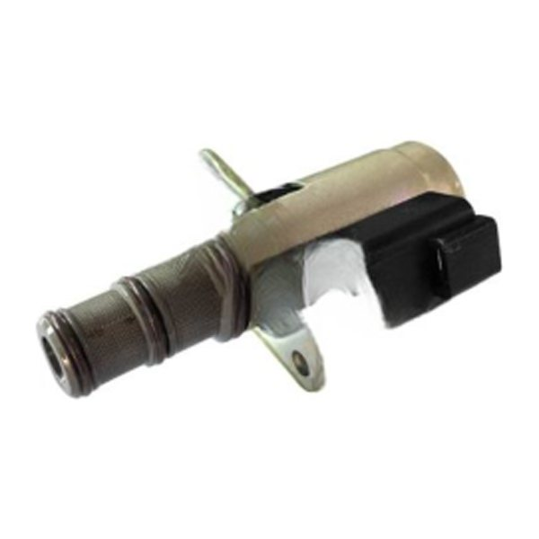

Available
Email for a quote
Yale 14400-401 Valve Tappet
| OEM part number | 14400-401 |
| Fits | Yale |
| Models / notes | GLP/GDP040-070VX(A975) |
| Category | Engine |
| Type | Aftermarket replacement |
Send us the quantity you need and we'll reply with pricing, usually within 24 hours. Not the exact part? We can source it. Send the part number or a photo.